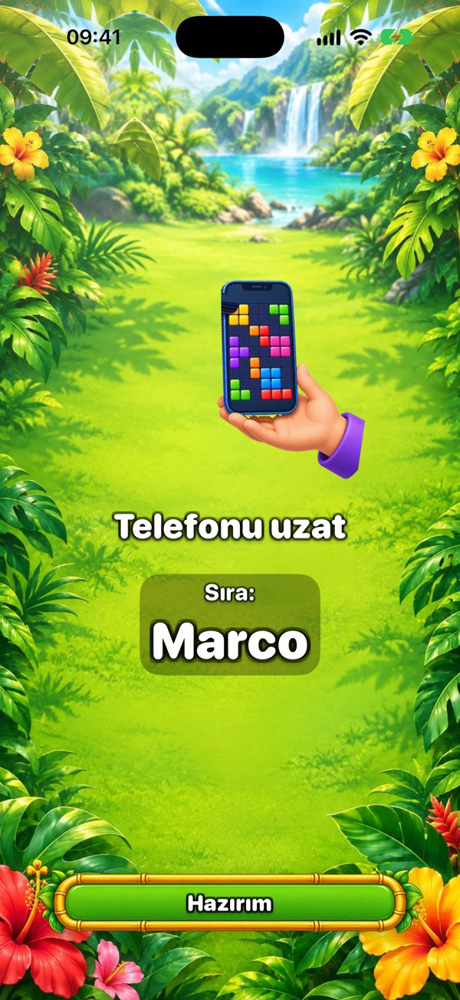
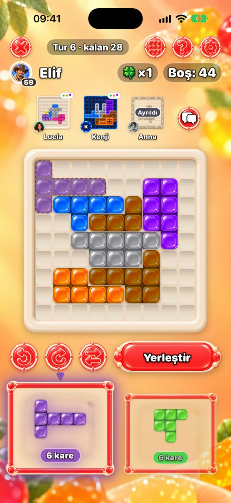
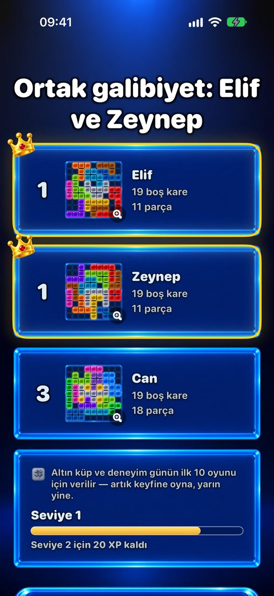

Tek telefonda birlikte oynanan bir oyun
Tüm ailenin tek telefonda oynayabileceği bir şey mi arıyorsun? One More Chance elden ele dolaşan bir bulmaca: herkes kendi 9×9 tahtasını aynı parçalarla doldurur, en az boş kare bırakan kazanır.


Tek telefonda nasıl oynanır?
Herkes tahtasının ortasını kapatan, rastgele seçilmiş bir başlangıç parçasıyla başlar. Sonra her turda iki parça çıkar. İlk oyuncu birini seçip kendi tahtasında istediği yere koyar — parçalar döndürülüp çevrilebilir — ve telefonu uzatır. “Telefonu uzat” ekranı sıranın kimde olduğunu gösterir. Herkes aynı iki parçayı alır, yani tur adil; sadece tahtalar farklı büyür.

Kaç kişi oynayabilir?
İki oyuncu ücretsiz. Premium ile — tek seferlik satın alma, abonelik yok — tek telefonda ya da iPad’de altı kişiye kadar oynanır. Kalabalık bir grup için masadaki bir iPad harika olur.
Herkes kendi telefonunu kullanabilir mi?
Evet. Yakındaki telefonlar Bluetooth ve Wi‑Fi ile bağlanır — internet gerekmez — ve herkes aynı anda oynar, üstte diğerlerinin tahtalarını görür. İkiden fazla oyuncu için Premium yalnızca oyunu kuran kişiye gerekir.

Kim kazanır?
En az boş kare bırakan. Hiçbir parça sığmazsa “Bir şans daha” alırsın: sadece sana ait ek bir parça. Tamamen dolu, kusursuz bir tahta en büyük hedef.

Bir oyun ne kadar sürer?
Bir oyun en fazla 20 turdur. Tek başına birkaç dakika sürer; grupta herkesin ne kadar düşündüğüne bağlıdır, çünkü her hamle bir parçadır. Premium ile hamleyi 30, 60 ya da 90 saniyeyle sınırlayabilirsin.
Kaç yaşından itibaren?
App Store’da arkadaşlarla isteğe bağlı sohbet ve reklamlar yüzünden 13+ olarak derecelendirilmiştir. Oyunun kendisi tahtaya renkli parçalar koymaktan ibaret: şiddet yok, zamanlayıcı açık değilse acele yok ve parça koymak için okumayı bilmek gerekmez — küçükler bir yetişkinin yanında oynayabilir.
Ücretsiz mi? Reklam var mı?
Oyun ücretsiz. Reklamlar yalnızca tek kişilik oyunların arasında çıkar — arkadaşlarla oynanan oyunda asla, ne tek telefonda ne birden çok telefonda. Premium reklamları kaldırır, altı tema daha ve 6 oyuncuya kadar oynama ekler.
İnternet gerekir mi?
Hayır. Tek telefonda da, yakındaki birden çok telefonda da oyun çevrimdışı çalışır. İnternet yalnızca çevrimiçi masalar, arkadaşlar ve Günün bulmacası sıralaması için gerekir.
Bu akşam oyun gecesi mi?
iPhone ve iPad’de ücretsiz. Telefonu dolaştır, en az boş kareyi kimin bıraktığını gör.
Android sürümü çok yakında.